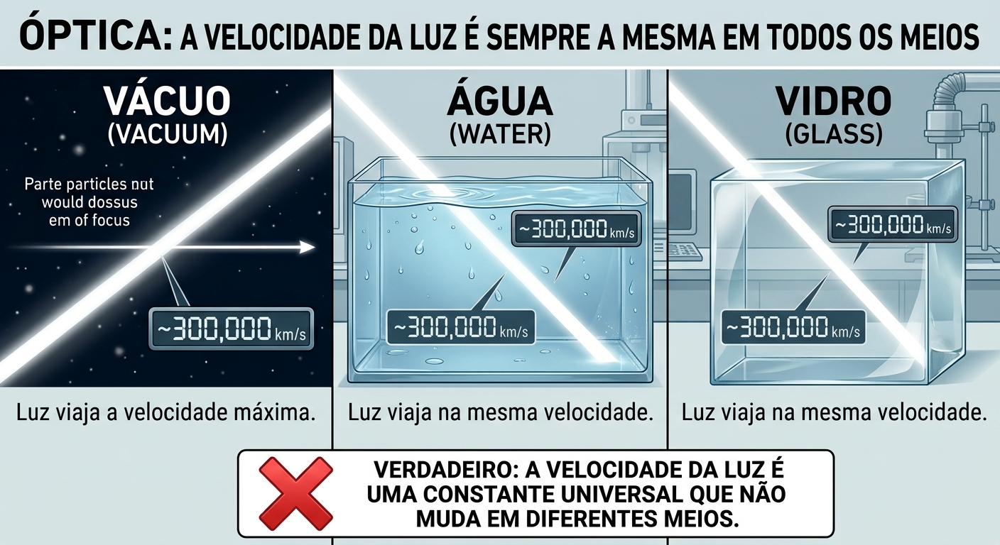
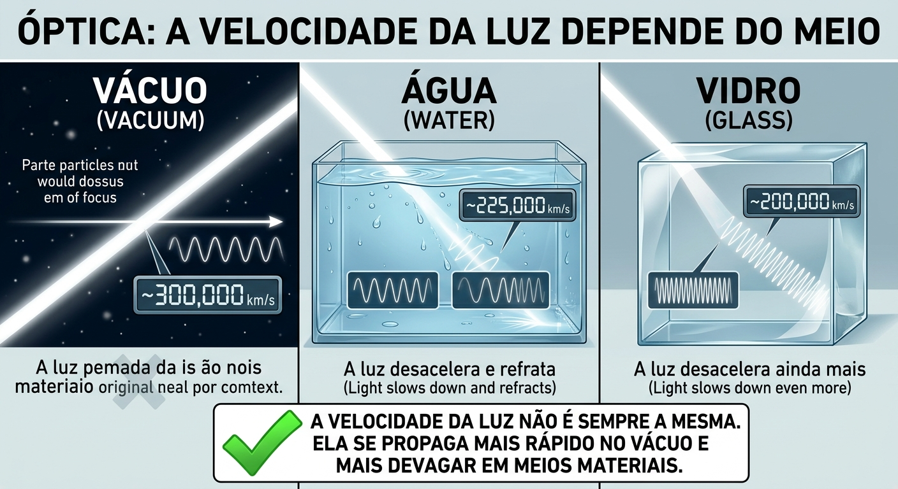
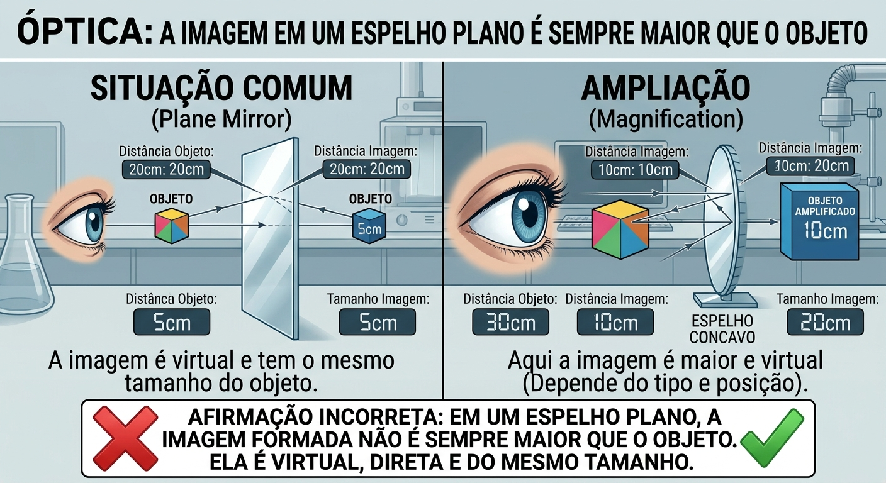
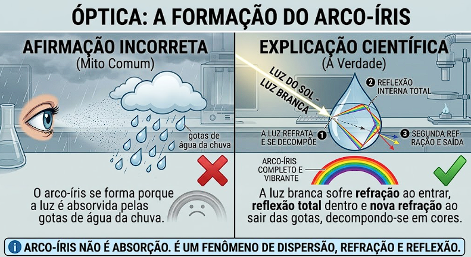

Experimento do LDR e do LED

Usamos um sensor LDR (resistor dependente de luz) para ler a luminosidade do ambiente e, com base nisso, controlar o brilho de um LED e a posição de um servomotor.

Experimento do LDR e do LED

Usamos um sensor LDR (resistor dependente de luz) para ler a luminosidade do ambiente e, com base nisso, controlar o brilho de um LED e a posição de um servomotor.

Experimento do Sensor de gás
È um experimento prático que usa sensor de gás, Arduino, modelo MQ-2 e buzzer, assim permitindo detectar gases inflamáveis e fumaça de maneira simples, acessível e inclusivo.

Experimento Young
È um experimento com o laser em uma fenda simples e fenda dupla, que demonstra a natureza ondulatória da luz através dos fenômenos de difração e interferência, formando diversos feixes de luz